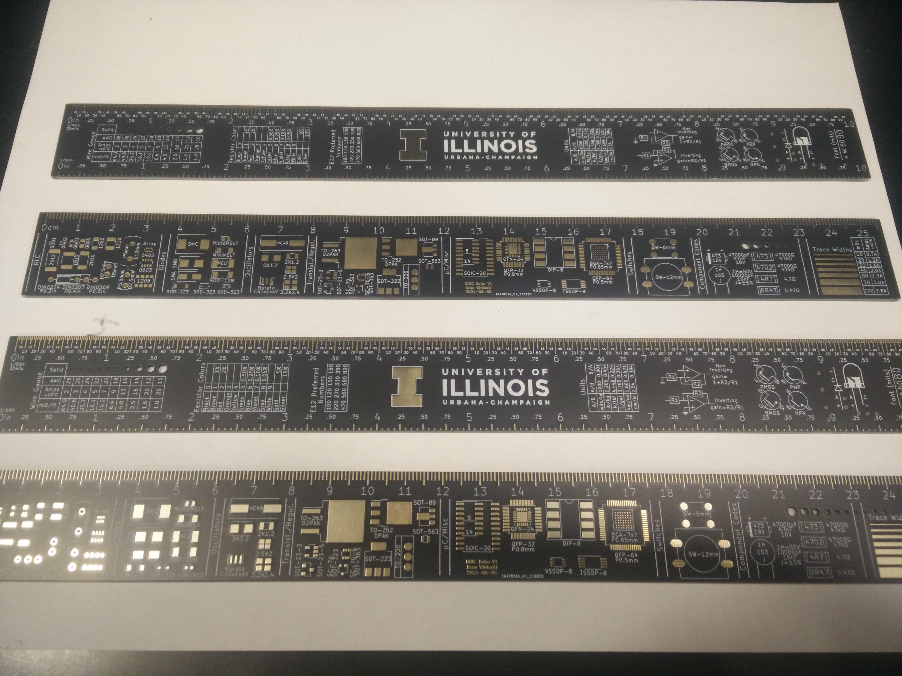
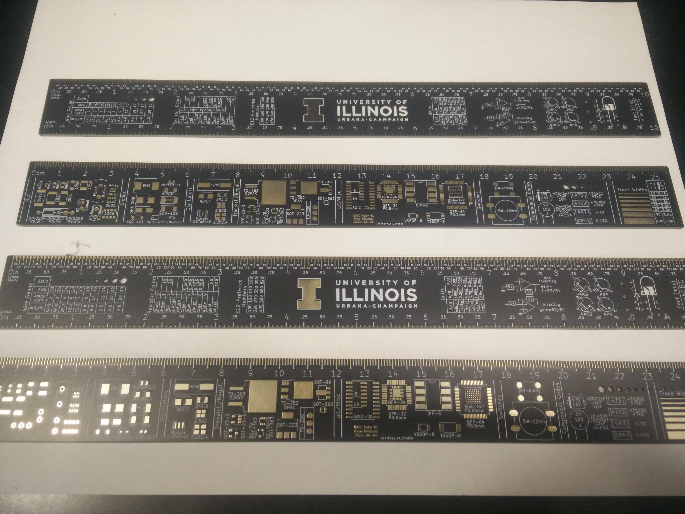

PCB Ruler
This is a board I designed to help students in UIUC's ECE senior design course. PCB rulers are not a new idea, but this my spin on the idea with footprints I've found useful.

This is a board I designed to help students in UIUC's ECE senior design course. PCB rulers are not a new idea, but this my spin on the idea with footprints I've found useful.
